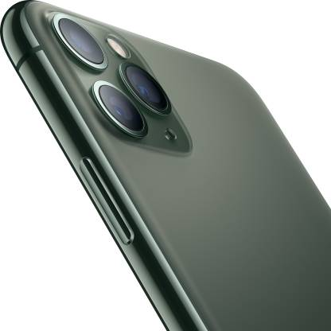
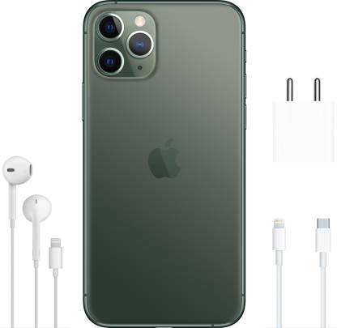

Home/Mobiles
APPLE iPhone 11 Pro (Midnight Green, 64 GB)
₹79,999/-
Design: An Obsession over Details Four new textured matt glass finishes and stainless-steel design. Featuring a 14.73cm (5.8) Super Retina XDR display, the iPhone 11 Pro is as beautiful as it gets. The IP68 rating ensures that is water-resistant up to 4 meters for 30 minutes.
The iPhone 11 Pro features Triple 12 MP Ultra Wide (13mm), Wide (26mm) and Telephoto (52mm) cameras. The Ultra wide camera provides 120° field of view, letting you capture four times more scene, and the wide camera provides 100% Focus Pixels and Optical image stabilisation and the telephoto camera comes with an f/2.0 aperture and 2x optical zoom.